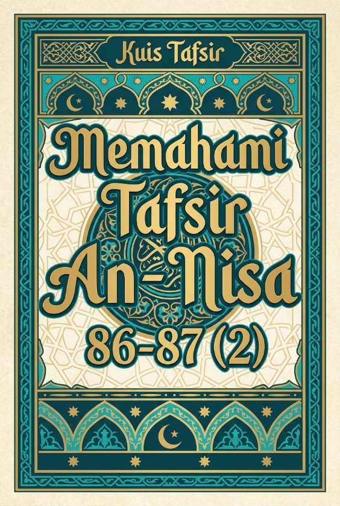

Memahami Tafsir An-Nisa 86-87 (2)
Kuis Interaktif · Bagian 2 dari 2
Adab Salam dan Hakikat Kiamat
Bagian kedua mengulas keutamaan membalas penghormatan, aturan salam kepada Ahli Kitab, serta sumpah Allah mengenai pengumpulan manusia di Mahsyar.

Kuis Interaktif · Bagian 2 dari 2
Adab Salam dan Hakikat Kiamat
Bagian kedua mengulas keutamaan membalas penghormatan, aturan salam kepada Ahli Kitab, serta sumpah Allah mengenai pengumpulan manusia di Mahsyar.
"Hukum memulai mengucapkan salam adalah dianjurkan (sunnah), sedangkan membalas salam hukumnya adalah wajib."
Para ulama tafsir sepakat bahwa memulai menyebarkan salam merupakan amalan yang sangat diutamakan dan sunnah. Namun, apabila seseorang telah mendengarkan salam diarahkan kepadanya, maka ia memiliki kewajiban syar'i untuk membalasnya dengan ucapan yang setara atau lebih baik.
Dalil (Tafsir An-Nisa: 86)
وَإِذَا حُيِّيتُمْ بِتَحِيَّةٍ فَحَيُwَّا بِأَحْسَنَ مِنْهَا أَوْ رُدُّوهَا
"Dan apabila kamu dihormati dengan suatu (salam) penghormatan, maka balaslah penghormatan itu dengan yang lebih baik, atau balaslah dengan yang sepadan."
"Jika seorang muslim mendapatkan salam dengan lafaz lengkap 'Assalamu’alaikum warahmatullahi wabarakatuh', ia tetap dianjurkan mencari kalimat lain yang lebih panjang untuk membalasnya."
Dalam penjelasan Ibnu Katsir, kalimat salam tersebut sudah mencapai batas maksimal lafaz yang disyariatkan dalam Islam. Karena tidak ada lagi tambahan kalimat yang lebih tinggi setelahnya, maka kewajiban dan keutamaan bagi penerima salam adalah membalasnya dengan kalimat yang serupa (sepadan).
"Apabila orang kafir zimmi (non-muslim yang damai) mengucapkan salam, kita dilarang membalasnya sama sekali."
Kita tetap diperintahkan untuk menjawabnya, namun dengan aturan khusus. Berdasarkan hadis sah, jika Ahli Kitab mengucapkan salam, kita tidak boleh mendahului mereka dan jawaban kita tidak boleh ditambahkan secara berlebihan, melainkan cukup menjawab dengan kalimat "Wa’alaika" (dan semoga atasmu juga).
"Pernyataan Allah bahwa seluruh manusia dari generasi awal hingga akhir akan dikumpulkan di Padang Mahsyar pada hari kiamat adalah bentuk berita yang mengandung sumpah."
Kalimat "Layahma'annakum ila yaumil qiyamah" pada ayat 87 ditafsirkan oleh Ibnu Katsir sebagai kalimat berita sekaligus berfungsi sebagai sumpah penegasan dari Allah SWT. Kejadian ini mutlak pasti terjadi tanpa ada keraguan sedikit pun di dalamnya.
Dalil (Tafsir An-Nisa: 87)
اللَّهُ لَا إِلَٰهَ إِلَّا هُوَ ۚ لَيَجْمَعَنَّكُمْ إِلَىٰ يَوْمِ الْقِيَامَةِ لَا رَيْبَ فِيهِ
"Allah, tidak ada tuhan selain Dia. Dia pasti akan mengumpulkan kamu pada hari Kiamat yang tidak ada keraguan terjadinya."
Alhamdulillah
Rangkaian kuis penguatan Tafsir Ibnu Katsir Surat An-Nisa ayat 84–87 telah selesai.